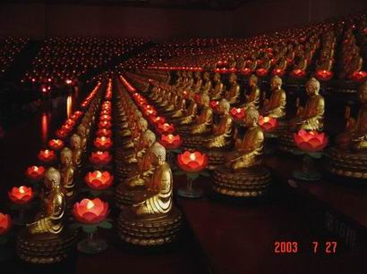
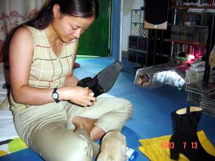
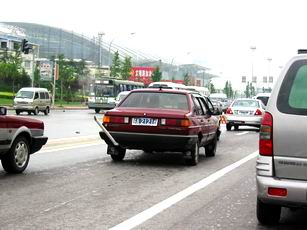
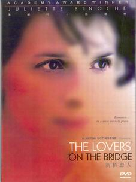
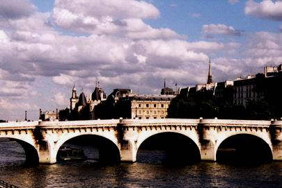

Archives : 2003-07
日常闲话 @ Jul 30, 2003
从青岛回来第一天上班，有点忙。下班前妈妈打电话给我，她一定是想我了才会主动打电话。于是晚上懒散地躺在床上和爸妈聊天，眼睛却不能直视妈妈的眼睛，我担心自己会哭出来。
晚上把寄养在别人家的妞妞和仔仔抱回家，并央求上海的BESS早些回宁，好把她家的狗狗领回去。两只小家伙大了许多，妞妞现在能做握手的动作、还能把抛出去的球咬着送到主人身边，是狗狗中比较聪明的一只。照顾狗狗的生活要开始了。
这天下午遇上一个女孩说有个人有女友，打算明年结婚，说他自己有很多情人问这个女孩愿不愿意做他的情人？这个人炫耀他每月一万元的财富收入，炫耀他的情人，炫耀他受的精英教育，炫耀他的未来一定不同寻常，炫耀他按揭贷款买的房子......但是我想他还忘记炫耀他伤害过多少女人，这也是不同寻常的经历和价值观。很赞同乌鸦嘴上写的：其实个性自由与基本道德并不相悖。这个人是个性自由了，但是他缺乏的是道德。
懈怠工作两三年时间，和父母谈论过这个话题，我没受过什么所谓的精英教育，但我仍然希望看得见未来五年的摸样，而不是今天和明天、后天，今年和明年、后年一个样。下个月我过29岁生日，而下个十年里我是否能给自己除生活之外的一点惊喜？结婚的感觉就是安定下来给你空间和时间做自己喜欢做的事情，现在我的感觉是这样。用镯子的话形容结婚，那就是：“啊，我终于不用谈恋爱因此也不用那么烦了。”
今天从青岛回到南京 @ Jul 29, 2003
一年一度的休假，2003年公司选择在山东青岛，浩浩荡荡80人左右的旅行团25日一大早乘8点的飞机出发了。
 —从我居住的汇泉王朝酒店1563房间的阳台上拍摄的海滨第一浴场
—从我居住的汇泉王朝酒店1563房间的阳台上拍摄的海滨第一浴场
在青岛时住在汇泉王朝酒店，临海，青岛海滨第一浴场就在酒店对面，免费开放，每天有很多人在海滩上游戏玩耍休闲。但比起海南亚龙湾和西岛海水及海滩上的沙子质量却要逊色许多。青岛马路整洁，几乎看不见骑自行车的人，临海地段城市规划是我去过中国城市中给我印象比较好的，每幢建筑间隔空间很是宽敞，大部分是单行车道，建筑周围绿化面积较大造型也不错，看得出是动过脑筋的。青岛最普通的房价达到3000/平米，临海地段少则10000/平米，那里也象北京一样控制人员户口迁入。出租车生意不好做，青岛公共汽车多几分钟就有一辆，人们更倾向乘坐公共汽车。青岛出租车起步价为四公里7元，之后每公里费用为1.2元，青岛出租汽车司机每月均收入在1500元左右。山东菜烹饪粗糙，似乎山东人不太讲究吃喝的问题，有人夸张地说青岛公共汽车上弥漫着一股大蒜的味道，呵呵~~总之，这四天没有吃到什么可口的饭菜，哦，对了，馒头还是不错的。
白天跟着旅行团看所谓的景点，实则空洞无味。之后除了睡觉，尚有些剩余时间用来享受幸福和快乐。和我同房的小女生在这些剩余时间里活跃的象只小鹿，有个晚上居然到凌晨4点多钟才回来，听见卫生间里水哗哗的声音，我醒了，接着她出去又回来，然后睡觉。早上叫醒服务是6：00，所以她几乎没怎么睡。后来她告诉我他们7、8个人在酒店的酒吧玩，然后一起出去吃夜宵，接着到海滩看海玩水......很佩服他们的熬夜功夫。
青岛的夜晚比较凉，海风吹拂在皮肤上湿漉漉的，沿着五四广场附近的海滨路在橘色的路灯下行走很惬意，顺便买了“五四广场和栈桥”的小纪念品。坐在临海的椅子上仰望广阔天空，那种感觉是一生一世的，因为时间在那一刻凝固。真羡慕青岛市民每年都能拥有那么美、那么凉爽的夏夜。
在青岛停留两天接着去了南山村，有点类似华西村的地方。28日返回南京的上午很仓促地游览了蓬莱仙境。去蓬莱之前必须先去观音阁膜拜，庙中央有座四面观音，听导游介绍了一下，什么都没记住。接着被领进一个方面说是什么修道很深的和尚可以为我们解说人生，那个和尚叫我过去，我单腿跪地装出很虔诚的摸样听他说到：“你这个人很重感情，心直口快。你能为你身边的男人代来财运和福运，前年你不是很顺，去年还行，今年要小心些，明年的7月会有事情发生你要当心。在现在的单位里你看得见很多财运可是抓不住，因为你身边有许多小人，你离开这里自己搞公司或者做生意，会更好。烧两柱高香....”哈，两柱高香260元，故事还没完，烧了香许了愿把香烛送给那个和尚，他又叽里咕噜说了很多话，结果我什么都没听清，他的语速太快。他要我去请一座金蟾回家，要老和尚开光之后才灵验。蟾蜍+开光共花去380元银子，呵呵，这还不算多的。听说有个同事要烧7柱香呢。这个烧香许愿的过程就是告诉我们心里有就有，心里没有就什么都没有。

—南山大佛景点内的几千尊佛像
TOM在非洲的生活 @ Jul 22, 2003
在非洲我还需要一段继续适应的过程，有时候想念故乡和亲人的感情会突然从心里出现......我想这就象抽烟一样，大多数人是戒不掉的,但是这又跟烟不一样，抽烟的人只是下意识的不断会产生一个欲望。而身处异乡的我本来没有什么“乡愁、思念”，在国内的时候跟大多数人一样是麻木地过日子，对很多的情感是熟视无睹的，不知道珍惜，直到出国了才发现亲人、家庭和朋友的可贵。
我很珍视非洲之行，这次出国不仅是我职业生涯的新开端，更给我提供了一个好机会来深思在国内的情感和生活。我明白了：世间最美好的是家人、朋友的亲情和友情，在你不懂珍惜的时候，它会悄然离去。就是这样简单的道理，为什么我在国内的时候没有切身感受呢？
汇报一下工作进展吧。
我负责的两个移动营运商，中低层关系我用一个月时间建立得差不多了（评价：S公司的信息渠道还不算通畅；K公司则极为通畅），现在真正的挑战出来了，怎么把客户关系层次往上走？ 难不难？非常难。他们是分别来自英国A和法国B的白人。我的感受是：做黑人关系跟国内差不多，相对容易。而白人...我的几个前任花了2年多的时间也没有什么进展（除了在S公司的传输）。
我们面临的最大问题是白人看不起中国人，他们对我们的技术和设备不了解不信任。但这同时也是我方的机会－－我的切入点：邀请他们高层管理者参观中国的深圳、上海和北京（城市发展和HW公司的实力），只要成行，我相信会对他们造成极大的观念方面的震动。 好，这是我目前最首要的任务了！！
另外一个威胁出来了，对手V在K公司活动频繁（S公司没有他们的机会了，因为HW公司的传输运行情况极好，局方肯定不会再引入新的厂家了） ，除了测试GSM手机，还要举行GPRS技术交流会。我分析他们是借测试手机的机会接近白人管理层，达成他们的目的的。我肯定要遏制他们的活动势头，虽然现在的情况还很复杂（法国B在全球收购了过多的公司包括美国的环球电影公司，业绩却每况愈下，不得不收缩战线，要把非洲K公司的全部所持股份卖掉，有2家来竞买，其中一家是我们的战略合作伙伴），我们在等待结果，但是从战术上必须压制V…..
另外，昨天晚上看到你的某个板块有关于《走出非洲》电影的评论。其实我现在居住的地方Norfolk Tower和旁边的Norfolk 酒店，就是电影主人翁原型的房产，海明威等名人都在这里居住过。
在上海了 @ Jul 19, 2003
乘下午5：45分T703次的火车前往上海，下了火车进入火车站地下出租车站点打车去百乐门，二姑妈他们在那里等我一起吃饭。出租车进入霓虹闪烁的马路时看见车两边飞驰而过的宝蓝色百事可乐广告灯，很美。可在很美的街景中我感觉自己是那么渺小！每每在上海我的感觉总是这样，无方向感，茫然。在南京我熟悉那里的人那里的街道还有街道上嘈杂的声音，人们习惯一种生活方式一片土地甚至习惯一个人，很难改变。
明天一早去看BESS，她周一动过手术今天已经出院了。周二我们通电话她的声音有些疲惫，今天上了火车她在电话里的声音又恢复到过去那种跳跃柔媚的状态。我说：“你好了，又回到过去了？”她说“是啊，上海的同学说住医院的不是我了而是他们了，呵呵，我现在脸色特红润，很轻松啊......”“明天我来看你，丸子还好吗？”“她好啊......哎......”
这次出来南京还是那么让我牵挂。明晚南京有有和江苏舜天足球队在五台山踢比赛，很想去看，可BESS难得生病，这是个向好朋友拍马屁的好机会，于是到上海吧，感受一下自己的渺小！
一个同龄女孩给我的信 @ Jul 18, 2003
征求她的意见后转载至此！
我一个人在办公室里，我想一个人静静地，收拾一些东西，整理一下。我今年以来，过得非常乱，心里乱，表面上是一幅温和的天真，实际上内心很乱，乱得原因有些你是知道。感情实际上是很可怕的东西，一方面，让你内心充实，另一方面又让你无法心无旁羁。我以前很单纯，现在复杂了很多，当然我并不后悔，我只是觉得有时人是逃脱不了命运的安排。
最近一直掉头发，很厉害，心里压力很大，但是感情的事我已不再去想了，我想，这也是一种无奈的选择或说你不知道如何选择的情况下就LET IT BE吧。我是一个功名心很强的人（不是功利），我实际想做一个小女子，象童年时单纯的女孩子。但是，我很害怕自己没有出息。我父亲一直以来比较压抑，因此他很多希望寄托在我身上，我从小就怕他失望，尽管我其实已经让他失望过几回。大学毕业那年他过世了，心里倒有些须轻松，但这几年碌碌无为下来，心里虚得很。工作这几年，我自觉自己散漫很多，而本身我又不是那种理性得能沉下心的人，工作习惯自觉不好。女孩子搞工科，实际很辛苦，尽管我们这行已经不错，技术含量并不是太高也不新，以前也不太热爱自己的行当，现在呢，漫漫有些兴趣了，再说转行也不易了。
这两年，我好象就是半点心在工作上，大半心都交给恋爱了。恋爱真的太美好了，那种感觉，被人爱与欣赏的感觉以及花前月下的浪漫都让我无比的享受，也算是补了人生的一大课。所以我又非常地感谢命运的安排。我实际是属于心理素质比较好的女孩子，我独立且享受寂寞，但是人就是会贪心。他说过会和我埋在一起，假若死后，在XX。
我再过几天就过29岁的生日，倒比以前坦然，以前我觉得马上要告别青春，心里非常难受，你想，那种飞扬，那种昂扬是多美的一种姿态。我一直会想象一个画面：天空高蓝，海浪为底，女孩迎风展臂，笑容迷人，嘴角微翘，充满笑意的眼微眯。我这么美丽的青春就这么要过了？？？
压力大可能和急功近利有关系，只能调整自己的心态，慢慢来。
感谢你和茶，让我有些闭塞的生活多了许多亮光。
我很久没有和人写了这么多东西，在你的身上，我发现自己很多东西——强烈喜爱自己和热爱生活，对生命和人充满了激情。
老妈火锅店 @ Jul 18, 2003
昨晚和几个同事一起到老妈火锅店吃饭，六个人喝了10瓶啤酒、两大瓶可乐。JEFF的老婆回家去了，我们几个人吵闹着去他家玩，大伙儿普遍认为他家的床太硬太单薄，卫生间的门居然关不严。他和他老婆抗战8年才结婚，比我早三个月领证。
现在社会风气就是好，吃过饭大家抢着付钱，还乐呵呵的~~有次集团让青年团员填表，其中一项问交友标准是什么，有个男同事潇洒地写到：男的要有钱，女的要漂亮。哈哈哈~~这句话令他名声远扬。
再谈《新桥恋人》 @ Jul 16, 2003
刚看完《新桥恋人》，虽然时间很晚可还是要打开电脑写几句。之前看过一些有关《新》的介绍和文字，可那些文字当中大多会提到新桥绚丽的烟花、Michelle和Alex各射击7发子弹以及落入塞纳河水等等的情景。他们表达内心方式的扭曲，以酗酒疯狂的舞蹈来趋散压抑着的内心苦痛，那时的爱情还没有绽放出美丽的花朵。开始看的时候我怎么都投入不进去，太晦涩了，我认为Alex爱上Michelle是从看见Michelle图画中的自己开始的,他居然被人画在了画上,这如同在黑暗中被明亮的眸子望了一眼那样令他心旌荡漾。
我个人喜爱且印象深刻的细节有：—Michelle问Alex看过海吗？于是他们去看海。夕阳下的大海跃出镜头的瞬间我从视觉到内心的感受都是澎湃着的，两个人无拘无束大声欢笑的裸奔在海滩上，Michelle用手拉着Alex坚挺着的阳物向前奔跑的剪影丝毫没有身体和感情上的束缚感，是彻底和奔放的。一个女人对一个男人的爱恋也体现在对这个男人阳物的膜拜上。
—老流浪汉带Michelle去博物馆看画，在新桥上不见Michelle的Alex痛苦迷惘，他动手打了回到新桥的Michelle，对白的沉默代替了两人的撕打，Michelle发现Alex自残的伤口......果真爱到深处尽是脆弱和敏感吗？
—之前，老流浪汉极力要从新桥上赶走Michelle，是因他不愿Michelle再遭遇他死去恋人的经历。老流浪汉在博物馆中拥抱了裸露的Michelle，一如拥抱昔日恋人的体温，而他的最终结局和他33岁去世的爱人一样埋葬在塞纳河中，这对他何尝不是一种幸福？
—Alex看见地铁里长长的墙壁上贴满大尺寸黑白色的寻找Michelle的告示，重重的压迫，他不希望Michelle离他而去，布满墙壁的寻人启示把Alex的烦躁和焦虑体现的恰如其分；
—Michelle到监狱探望Alex的那幕，是梦境中不曾消失过的爱情将Michelle重新带回到他的身边，她总是梦见Alex，醒来时就要见见梦中人......Michelle难以忘记新桥上的恋人，虽然两年多过去了；
—出狱的Alex不小心跌倒滑向大雪纷飞下从新桥那边朝他走来的Michelle，这和他们两个人裸奔在海边的那幕被我认为是最浪漫的情景；
—三年后他们重逢在冬天的新桥，Alex抱着要离去的Michelle跳进塞纳河中，爱她，就别再让她离开，哪怕是一秒钟的分离，爱她还有什么顾虑和担忧的呢？Michelle对救他们上船的老夫妻讲：“我们也去大西洋，和你们一个方向......”把腐烂的巴黎留在身后。这是令人向往的私奔情节！
《新桥恋人》中的爱疯狂且异常苦涩，在我们周围还有这种生死之恋吗？还找得到忘我相爱的恋人吗？很显然没有，所以我们继续看电影。—之前的“新桥”文字
十首经典英文伤感歌曲 @ Jul 15, 2003
1.PINK FLOYD—WISH YOU WERE HERE
喜欢PINK FLOYD的音乐是我所不能控制的，而同样听这首歌的时候，我也不能控制我的眼泪，这完全是心灵深处溢出的泪水。
2.PEARL JAM—LAST KISS
作为一只噪音而声名雀起的乐队来说，这首纯乐器的作品有媚俗之嫌，但谁能没有爱呢？“she’s gone to heaven,so I have got to be good,so I can see my baby when I leave this world”
3.OASIS ~~-TAKE ME AWAY
绿洲的音乐一向是动听的旋律+激情，他们只需把节奏放慢，然后去掉一倍的扫弦力气，多一点疲惫，多一点颓废，就足以让黑夜里所有的角落睁开眼睛回忆了。~~
4.RADIOHEAD—CREEP
伤感，颓废，无力，空荡，似乎RADIOHEAD总能摸到你最痛最隐蔽的伤口，YORKE的嗓音太有杀伤力了，这首歌给颓废到极点的众高手们一次彻底的考试。
5.NIRVANA—WHERE DID YOU LAST NIGHT？
不多说了，很多人都听过，很多人都眼圈红过，无声胜有声。
6.SUEDE ~~-BY THE SEA
黄昏的天空，空旷的海边，那里有一座帐篷，里面有灯光，有笑语，有如火般纯洁的青春，有如梦般皎洁的凝视。~~
7.-U2—ONE
BONO的吟唱，就是听它的理由。
8.THE SMASHING PUMPKINS—TO SHEILA
年少轻狂，年少痴狂，碎南瓜的年少是如此，我也如此。
9.NICK CAVE ~~- BLACK HAIR
黑发如丝，黑发如夜，当闭上眼，一切暗到黑色，然后我们思考，我们吸烟，我们用酒趋走心里的寒。~~
10.RADIOHEAD- STREET SPIRIT
神来之笔的音乐，我听了不下50遍，我还听不够，我还感受不够，那些在排行榜上的酸曲甜乐，是否该自惭呢？
ONE @ Jul 15, 2003
U2—ONE
BONO的吟唱，就是听它的理由。
Is it getting better
Or do you feel the same
Will it make it easier on you now
You got someone to blame
You say…
One love
One life
When it’s one need In the night
One love
We get to share it
Leaves you baby if you
Don’t care for it
Did I disappoint you
Or leave a bad taste in your mouth
You act like you never had love
And you want me to go without
Well it’s…
Too late
Tonight
To drag the past out into the light
We’re one, but we’re not the same
We get to
Carry each other
Carry each other
One…
Have you come here for forgiveness
Have you come to raise the dead
Have you come here to play Jesus
To the lepers in your head
Did I ask too much
More than a lot
You gave me nothing
Now it’s all I got
We’re one
But we’re not the same
Well we
Hurt each other
Then we do it again
You say
Love is a temple
Love a higher law
Love is a temple
Love the higher law
You ask me to enter
But then you make me crawl
And I can’t be holding on
To what you got
When all you got is hurt
One love
One blood
One life
You got to do what you should
One life
With each other
Sisters
Brothers
One life
But we’re not the same
We get to
Carry each other
Carry each other
One… life
One
继续快乐 @ Jul 14, 2003
南京这段时间开始疯吃龙虾，周末在饭店点菜吃了两次，比我家里做的个头大、肥，味道却未必好过家里的，但是吃起来方便。有人问我南京什么地方的龙虾做的好，还真不太清楚，对外面做的龙虾也无特别的爱好。
终于出梅了，气温一下高出许多，最高温度达到35度。周六姐姐指着我的脸惊讶地说：“哎呀，你的脸上怎么长了这么斑啊？皮肤还缺水......赶紧去买SKII…”被她这么一说怪烦的，在东方和大洋百货买了N元的SKII，若能买回些安慰也好。
周末BESS去了上海，发短信给我说她正在上海的嘉年华玩呢，7月26日嘉年华就结束了要我赶紧去，说她特别开心！今天她就要住院了，好好玩吧，下周我去看你，我们一起快乐！
一周前邻居家的KOKO把七只小狗里的老二咬伤了，COCO打电话给我的时候在哭，我跑去安慰她。我哭的时候特不喜欢别人安慰我，那更令我烦感，这就和别的女孩不同。老二还是在前天晚上死了，那天刚满月。COCO打电话给我，她的哭让人放心不下，我走进去时COCO抱着老二坐在地垫上眼睛肿着，我想我可能不会象她那样哭若我遇上同样的事，也许会难过眼睛湿润，但不会那样。这就让人更加担心COCO了。COCO的鞋很多，有人说过鞋多的女人心事多。第二天L深圳出差回来，两个人下午带着KOKO和BOBO去中山陵埋了老二，下一次她会为什么哭呢？

清洁鞋子的COCO—更多妞妞的照片
很多时候我们都是一个人的…… @ Jul 10, 2003
命运就象熙熙攘攘的人群，你顺着人群的方向行走，想从人群中挤出来，可人群行走的速度很快人流的力量也很大；
命运也象挤公共汽车，你夹在挤车的人群中间，大家极力往车上挤，你也被这股力量携带上了车，你频频回头张望，车就要开了.......
在这个世界上，人和人只要稍一疏忽，就会永远分离。
很多时候我们都是一个人的……
寂寞会很多。
能拯救我的只有你，
因为我已经寄生在你身上。
但我们还是经常一个人荡秋千。
我们都是很孤独的一类……
但当我们相遇……
快乐真的可以像天使飞舞！
寂寞的时候想想我，
想我的时候来看我，
看我的时候带水果，
桔子和苹果，
桔子代表你疼我，
苹果代表你爱我。 —茉莉香片
观影日记：《黑/白》 @ Jul 09, 2003
原文来自日落酒馆 Posted by 新几内亚白人 @ 2003-07-08 00:21
好久没有通过中央六台看电影了。一是因为陈旧，二是因为大多是译制片。赶巧有这样的机会，看看艾敬的第一部电影《黑/白》。很精致，但也很做作。剪辑看出来很用心，包括每一个镜头。摄影成了导演最下功夫的工具，阐明了一个观点：现实世界是黑白的，只有孩子属于彩色。我明白他的意思，只有孩子，有着没被污染的天空。所以，大部分的镜头都是黑白，只有孩子出现的地方，彩色模糊地出现。还有，当黄队长和艾敬在郊外拍摄春天（还是秋天？）时，树林是有颜色的。
只是，如此用心，会不会让人感到险恶？
一个并不复杂的故事，被雕凿得精巧异常。 也许，对中国电影，或者电视，太需要这种用心了。即使，有时候，这种用心，显得有些过分。影片后面，旁白：xx的遭遇，虽然值得同情，但还是受到了法律的制裁……我哑然失笑。加了这句话，这部片猛地变成了一部主旋律。 －－当他们把片子送到国外参展时，也有这句话吗？还是中国老百姓特别需要这样的画龙点睛，来提高觉悟？
影片由祝小民负责音乐。还是他显得单薄的电子乐，没有歌手的声音时，显得苍白。姜昕的《孽缘》多次响起。很奇怪，反而没有艾敬的歌。也许，只有姜昕属于祝小民。自从《花开不败》，姜昕的歌，怎么也走不出祝小民铸造的音乐空间。而《孽缘》，和《花开不败》何其相似。 看完电影（还是电视？ 这个所谓的电影电视），很漠然地想起了蔚华的《酸雨》。 摸出来放进碟机。
“我的情感比海还咸，我的歌谣比天还蓝，我的长发比彩虹鲜艳，你的孤独比雪莲罕见.....”
片中，艾敬在学校看小茂的表演，头发扎在脑后，纯纯的笑容好像十年前。十年了，我们都经历了许多，但是，有一些笑容，还是没变。片中主题曲《孽缘》BY 姜昕
剧照/艾敬
资料：
由上海新锐女导演李虹执导的16毫米胶片电视电影《黑白》，以凌厉的影像和极端风格化的叙述，在前不久结束的第16届法国汉斯国际电视节上，为中国捧回第一个电视电影国际奖杯——“评委会特别大奖”。
《黑白》由艾敬和安子主演，讲述的是一个意外场合发生的意外故事。“黑白摄影工作室的女摄影师赵海芸(艾敬饰)正在为顾客于翔拍照，一个光头青年突然闯入，以迅雷不及掩耳的速度持刀捅向于翔。赵海芸在惊吓中随手按下相机快门，杀人瞬间被凝固在底片上。此后，围绕这个底片发生了一系列故事，结果出人意料——赵海芸才是杀害于翔的真凶。”
似水年华 @ Jul 09, 2003
昨天中午听一个办公室的同事提到《似水年华》 这部电视剧，很感兴趣，今天一个署名郑蕾的人留言：看了你的网站总是让我想起最近热播的似水年华。于是，搜索来细细研究，故事发生在世纪之交的江南古镇——乌镇。《似水年华》讲述的是一个6天的爱情故事，一个江南小镇的图书管理员，一个台湾时装设计师，因为偶然的一次注视，彼此成了一生最永恒的思念。这6天的爱情并不惊心动魄，但却刻骨铭心。古典秀丽的乌镇、似水缠绵的爱情、奇幻唯美的画面，《似水年华》将一种浓郁的人文气息深深吸收进来。
一个人的命运，也许就是他一生的种种选择，我们在这些选择之间成长。这是一个关于选择和成长的故事。人生的种种选择之中，情感又是特别让我们困扰的。这是一个关于情感的故事。
故事里有一些很特别的人，但他们决不另类。他们的生活理念和价值观与一般人没有什么不同；他们面对人生做的选择，跟大部分人也都差不多；他们遭遇到的生活的玩笑，其实每天都可以发生在我们身上。
只是在故事里面，面对情感的问题时，他们心无旁骛，目不斜视。他们为情感真实地困惑着，认真地抉择着。他们也因此而有了诗意的光彩。
故事的时间跨度是五十年。我们第一次见到我们的剧中人物文和英时，他们是三十岁，正是面对选择的年纪。他们相遇，爱，然后分离。当我们在剧终再见到他们，已是五十年后。这中间他们的大半生光阴，对于我们是空白，留给他们自己……


......英失眠了，躺在床上辗转反侧；文见齐叔叔的房间灯灭了，便悄悄溜出了书院。凌晨时分，英和文在这个像睡着了一样的小镇上偶遇了。两个人只隔着两步之遥，他们聊天气，聊童年，英请文带她夜游乌镇。二人来到逢源双桥，英站在文的身后，隔着栏杆注视着文。英不知道该说些什么，也许这个时候，只有沉默才能代表一切。文在栏杆这边走来走去，英隔着栏杆也在走着。文突然转头隔着栏杆看着英，目光交汇在了一起。更多剧情介绍
雨后南京 @ Jul 09, 2003



一个字：烂 @ Jul 06, 2003
又是一场极其无聊的足球比赛,江苏舜天主场2:3输给河南建邺,江苏舜天的替补守门员真搓，手忙脚乱的连奔跑动作也那么不协调，拿望远镜一看...还TMD嚼着口香糖！真想冲进场地从后面踹他一脚。踢完全场比赛他只扑出去两三个球，人家河南人有板有眼的配合在上半场就进了两球。球员踢球除了技术之外是否还和他们每个人的思维方式心理素质有关？此时突然想起某人说的话：”他居然连河南人也上？！”其实上河南人和输球给河南人的过程及感受应该是一样的，一个字形容：烂。
整个晚上29岁的傻瓜毫无意义地坐在看台上，我问自己你在干什么？而舌头已断，语言功能丧失，回到家中时间已是0：57分。

扬州露天体育场

扬州市区，隔着车窗玻璃拍下的
The Lovers in the Bridge《新桥恋人》 @ Jul 03, 2003
Romance is a most unlikely place.
如果你喜欢看《新桥恋人》，下次到巴黎，记住到PONT NEUF一游。烂漫的烟火下，疯狂地舞蹈，射击，酒醉，放纵,是因为身边那个一直相伴疯狂地无条件爱着她的恋人。爱情应该是这样的，没有虚华，没有欲望，没有你自己，只有爱，只有爱……人们渴求不一样的生活，《新桥恋人》 里丑陋的人以及人之间奇异的花火，是新鲜的，刺激的，是带气泡的酒，熏人晕，泛起同样奇异的想象的泡泡。生命中可贵的东西往往是不经意间与你擦肩，同时生命又是如此偶然，有时丧失得也很突然。

《新桥恋人》
镜头一：夜晚，Michelle和Alex喝酒，两人躺在破旧的桥面上，突然天空中炸开了烟火，在他们上面绽放得姹紫嫣红。Michelle掏出手枪，里面有１５发子弹，她对Alex说：“７发给你，７发给我，留一颗给将来。”于是他们坐在塞纳河畔的雕塑上一人连发７颗子弹。枪声与烟火声融为一体，烟花熔入进烟雾，他们也熔化在对方的眼中。这之后，他们打晕警卫，开着快艇在塞纳河畅游，漾开的水花在如墨的夜色中熠熠生辉。
镜头二：Michelle的眼睛快瞎了，她只想再去美术馆看一下她喜欢的那幅画。夜里，老流浪汉带她潜入美术馆。烛光下，Michelle坐在老流浪汉肩上，静静地凝视着面前的肖像，并不禁伸出手去触摸那色彩凹凸不平的画面，借助微弱的光线，Michelle中是沉浸于纯精神状态的的震颤。
镜头三：Alex对Michelle的爱狂热而深刻。而当他清晨醒来，看到Michelle写有“我走了，对不起，Alex，我并不是真的爱你” 的那张字条时，他是从快乐的天空坠落到现实的冷酷世界，从极度的狂欢下沉入最漆黑的暗夜。他的绝望与痛苦一刹那凝结在一处无法释放，心中的冰冷、压抑与寂灭只有靠那颗子弹来解决。于是，他用枪射向了自己的手心。
这个发生在巴黎新桥上的恋情故事是卡拉克斯投资最多的一部影片，花费了2000多万美元，但是昂贵的投入换回的却是票房的惨败，据说３个制片人因此而破产。这是一部颇具悲剧风格的华丽的黑色诗歌故事。好在一切的沉重和伤痛都因Alex和Ｍichelle最终跳入塞纳河、搭乘一对老夫妇的船开始新生活的结尾而得到了缓解和释放，因为那种纯洁、坚定而沉重的爱情真的是常人所无法承受的，它让人随时陷入如影随形的爱和恨，灵魂的升华和陷落，命运的灿烂和沉沦，存在的美妙光辉与虚无的黑暗深渊。
欧洲人是表现爱情的绝妙大师，但没有哪一个人能像卡拉克斯一样奏出如此辉煌的乐章。

PONT NEUF ：目前巴黎总共有35座桥，陆续建于不同时期，其中已经被列为历史古迹的有三座。在巴黎的建桥史上成为“里程碑式”的桥梁的应该算是“新桥（Pont Neuf）”。新桥其实很有点年头了。这座跨越整个西岱岛的桥梁开工于1578年亨利三世时期，1603年建成，由亨利四世主持了落成仪式。建造新桥的主要目的是为了便于卢浮宫、圣-日尔曼?德?普雷修道院和塞纳河左岸之间的联系。整个工程是五位建筑师的共同成果，桥面宽度为那个时代所罕见的28米，由12个桥拱支撑，桥拱装饰有三百多个形状各异的面具。被人们称为“圣玛利丹（Sanmaritaine）”的水泵就安置于第二个桥拱，塞纳河水由此供给卢浮宫和周围地区。之所以命名为“新桥”是因为在此之前巴黎建造的桥梁上都建有一层是商店、二层至五层是住宅的公寓，而唯独这座桥上不设公寓，开创了当时建桥的新潮流，所以得名“新桥”。1786年前后，考虑到有碍市镇美观和空气流通，巴黎所有桥梁上的公寓都被拆除。新桥本身后来根据路易十三的旨意在桥上醒目位置安放了亨利四世的骑马塑像。这些雕像曾于法国大革命期间被毁，但又于1818年重塑。在新桥建成后整整两个世纪里，桥屹立不动，这里逐渐成为各种娱乐和商业活动的中心，如今这里依然是巴黎著名的河边旧书市的核心地带。至今法语仍将“经久耐用”的东西比作“Pont Neuf”，即所谓“历久弥新”。
For You @ Jul 03, 2003
Un-Break My Heart.mp3—Toni Braxton
Don’t leave me in all this pain
Don’t leave me out in the rain
Come back and bring back my smile
Come and take these tears away
I need your arms to hold me now
The nights are so unkind
Bring back those nights when I held you beside me
Un-break my heart
Say you’ll love me again
Undo this hurt you caused
When you walked out the door
And walked outta my life
Un-cry these tears
I cried so many nights
Un-break my heart
My heart
Take back that sad word good-bye
Bring back the joy to my life
Don’t leave me here with these tears
Come and kiss this pain away
I can’t forget the day you left
Time is so unkind
And life is so cruel without you here beside me
Un-break my heart
Say you’ll love me again
Undo this hurt you caused
When you walked out the door
And walked outta my life
Un-cry these tears
I cried so many nights
Un-break my heart
My heart
Don’t leave me in all this pain
Don’t leave me out in the rain
Bring back the nights when I held you beside me
Un-break my heart
Say you’ll love me again
Undo this hurt you caused
When you walked out the door
And walked outta my life
Un-cry these tears
I cried so many, many nights
Un-break my
Un-break my heart oh baby
Come back and say you love me
Un-break my heart
Sweet darlin’
Without you I just can’t go on
Can’t go on
丢失 @ Jul 02, 2003
最近，丢了一块GUESS手表,戴过两三次，兰色印花皮质表带暗花方型表面；
丢了三份工厂开过来的增值税发票；
丢了四套报关单以及四份出运单据；
本来一对的耳环丢了一只，那还是在云南大理洋人街上的首饰店里买的，很喜欢的造型。
昨天下午要求全体党团员到集团开会，结果我翘班一个人跑去看电影《超胆侠》，30元票价。很久没看电影了，很幸运男主角是我喜欢的Ben Affleck，他的生日也是8月15日。小时侯会对一些感兴趣的东西做笔记，笔记上曾经记录过每一天出生的人不同的特性，比如：9号=有毅力，15号=愉快，19号=小气等等。Ben Affleck微笑时翘起来的嘴角以及清澈见底的眼睛特别令人着迷！美的事物没有人会拒绝，然而现实中若遇见这类迷人微笑的GG则会退避三舍。那么，why we like him?看看AskMen.com有关此类问题的文字介绍。
上周在邻居家用投影机看DVD，一个投影机的价格在2万元左右，影像投射在白色墙壁上，跟在电影院看电影差不了多少。如果房间再大点距离远了,脖子可能更加舒服些。用投影机看了半部《The 6th Day》 及整部的《Kangaroo Jack》，之前用电视机看的《Just Married》（新婚告急）值得推荐。收藏碟片的人一定不少，可将碟片分类摆放，并且有着分类记录的人应该不多吧？这家的男主人就是这样做的，要是查个什么歌手什么碟子很快就可以找到。他比较喜欢JAZZ，定期订购中图进口的美国音乐杂志，他很自豪的说他购买的JAZZ音乐碟片都是最新出来的专业级的。
突然为自己难过，几个月来居然没有关注过新上市的盗版碟，连《钢琴师》也没看过，惭愧！还丢了那么多东西，记得过去丢过一次爱情和50元现钞。如今这些东西怎么丢的有可能在哪里丢的，一点印象都没有了......而想丢的却丢不掉。
 Norah Jones－Don’t Know Why .mp3
Norah Jones－Don’t Know Why .mp3
I waited ‘til I saw the sun
I don’t know why I didn’t come
I left you by the house of fun
I don’t know why I didn’t come
I don’t know why I didn’t come
When I saw the break of day
I wished that I could fly away
Instead of kneeling in the sand
Catching teardrops in my hand
My heart is drenched in wine
But you’ll be on my mind Forever
Out across the endless sea
I would die in ecstasy
But I’ll be a bag of bones
Driving down the road alone
My heart is drenched in wine
But you’ll be on my mind Forever
Something has to make you run
I don’t know why I didn’t come
I feel as empty as a drum
I don’t know why I didn’t come
I don’t know why I didn’t come
I don’t know why I didn’t come
流浪北京 @ Jul 02, 2003
Bumming in Beijing：时长：150/70分钟；
拍摄年份：1990年；导演：吴文光
From SunsetHouse Posted by 新几内亚白人
“片子记录的是五位自由艺术家80年代末在北京的一段生活。五位人物是：写作的张慈、拍照片的高波、画画的张大力和张夏平以及戏剧导演牟森。他们户口所在地分别是云南、四川、黑龙江等，他们放弃老家的工作来到北京、或者在北京大学毕业后自动留在北京，途径不一，但目的大致相似，即在北京实现自己的艺术梦想。”
一部好多年前的电影，去年（还是今年）才有正式出版的DVD。可惜，这可悲的正版，只能放映40多分钟，然后就死掉。预告片也无法观看。叫我怎么支持你，正版？！ （注：影片可能是betacam机拍摄，所以清晰度比不上预告片中那些用DV拍摄的后期作品，但已够播放级了，再说，声画效果对于纪录片来说也没有用武之地。）
据可看到的40多分钟来说，有很明显的那个年代的痕迹。梦想还比较天真，人人向往国外（片中的张慈说：美国是世界文化的中心……眼睛闪闪发亮。 结果嫁给了一个美国老头，去了美国）。
吴文光的DV，可贵在片中的人物都很自然，没有一丝做作的感觉。可能是他们相交已很深的缘故吧。
前不久看到一篇报道，是讲这个片中的各个人物的现况。好像都在国外了吧，过着不同的生活。自由，特别是心灵的自由，真的只有到国外才能得到么？
片中的高波，自由摄影师，哼着“我要离开，我要存在，我要死去之后从头再来……”。那一刻，强烈地感到了1989年的气息，扑面而来。
那一年，夏天很忧郁。 不是因为同学的远离，而是我开始初恋。
那一年，夏天很ＸＸ。 “妈妈，我饿。 但是我吃不下。”
也是他，说，其实盲流，哪个人内心深处没有一点盲流呢。也是啊，所谓流浪，所谓行走，很多好像只存在于青春的梦里。但多年以后，内心深处，偶尔的，也会被轻轻触动。
生活，永远，在别处。

我眼中的越南女子 @ Jul 02, 2003
忘记是哪期的《旅行家》杂志上曾经介绍到越南如何自助旅行的文章，印象颇为深刻，于是把越南纳入自己将来旅行计划之中，梦想有一天去越南亲身感受文中所描述的场景。在日落酒馆上看见有几篇介绍越南的文字，转载其中一篇过来共享。酒馆里的几个酒保写的文章内容蛮有意思的，先前酒馆主人介绍酒馆给中国茶时，茶还没太在意，而改版后的酒馆却越来越吸引人。比起有些个人BLOG每日就象做学术讨论和个人高深品味展示要有趣的多！
Posted by rainlee
到越南之前，就听说越南的女孩美。香港上司去过西贡，用无限怀念的语气绘声绘色地向我们描述穿着国服的越南女子怎样在摩托车上飘飘欲仙地从身边掠过，浮现在我们脑海里的曼妙的越南女子的身影让那顿丰盛的告别宴也变得索然无味，我在担心着先到越南一步的LG如何承受得了如此严峻的考验，我的光棍同事在试图说服我务必给他们物色个温柔美丽的越南MM当老婆。
也许越南美女的比例并不比中国的任何一个城市高，就我看来，至少不会超过成都，但是她们普遍骨骼窄小，身材玲珑剔透，骑在摩托车上飞驰而过，很难不让人想入非非。在我居住的河内，已经很少有女孩穿国服了，可偏偏在经济发达的西贡，可以看到很多穿国服的身影。被叫做Ao dais的国服很象中国的旗袍，都是斜襟小立领，不同的是，下摆比旗袍短且从腰部开衩，别想歪啰，下面还有一条阔脚长裤呢。传统的Ao dais 是用白色丝绸做的，算是最正统的，但是服装店里最普遍的还是用各色暗花越南丝做成的，在西贡的一家大银行里面看见所有的女职员都穿着Ao dais ,面料用的是现代的各种花色的玻璃纱，走起路来飘飘欲仙，看得我们一行人目瞪口呆。
但是，没有越南MM的好身材，就别想把Ao dais 穿得好看。Ao dais 的上装紧紧裹在身上，上身的任何缺陷都暴露无遗，真的是够残酷，害得我直到现在也不敢跨入裁缝店半步。（不过我现在正在积极减肥，争取在走之前掠走一套当作纪念。）
别以为这里的日照强烈，这里的女孩都黑黑的。越南MM 爱美着呢，站在街头一打望，在轰隆隆驶过的摩托车流中的女骑士统统是头戴遮阳帽，用一张特制的大手帕把脸一包，只露出一双秋波，即挡灰又保护皮肤，更增加了一丝神秘感（这句是我LG让加的，估计是他老看不到MM的脸着急呢）。因此河内年轻的女孩子皮肤都保养得很好。越南的工业发展远不及中国，服装工厂不少，但都是为发达国家做加工，少有本土品牌。因此贪靓的越南MM成就了河内满大街的小裁缝店，想要什么新鲜的款式就拿着时装杂志找师傅做去，夏天一到，裁缝店更是生意兴隆，连我们楼下的小杂货铺老板的美丽女儿也支了一半的铺面当起了小裁缝，进去一看，样式还挺新潮的，裁剪和做工均不错。
越南女孩的好性情还是我参加了法语学习班以后才领略到。20个人的小班授课，一起上课的多是课余进修的大学在校生，年轻，有朝气。同学中有个个性特别张扬的女孩子，让我想起以前上学时无论在那个班上总会有的一两个焦点。大部分的同学还是温和内敛的，我旁边坐的那个女孩长得特别清秀，每次小测验都是第一名，笔记也记得漂亮整洁，可以用点简单的英文和我交谈，手中又操的是一本俄法词典，原来他们这里直到大学也是学的俄语，而一般的年轻人都通过各种途径学了英语，那不就是两门外语吗？ 真是佩服佩服。上课的第三天，我一个人走在回家的路上，突然一个从没交谈过的女同学把摩托停在我面前问是否需要搭她的车回家，让我感动不已。同样被感动的也许还有我们那个英俊潇洒的法国老师Alex 。一天上课时看见讲台上突然多了瓶鲜花，原来那天是Alex的生日，而这个信息他只在两个月前的一次对话练习中透露过，没想到就被人暗暗记下了。浪漫的法国人被彻底感动了一把，激动得通红的脸凑到那堆女孩中问送花人是谁，偏偏那多情的女孩子就是不敢承认，搞得到现在都是个未解之谜。
但是最打动我的，还是顺化皇城外那几个快乐的小姑娘，皇城是个荒凉的地方，加上当时已近黄昏，天色黯淡，可那几个顺化小姑娘银铃般的笑声和明媚的笑脸仿佛把一片天空都给点亮了，望向你的一双明眸直入心扉—- 久违的纯真啊。曾经有个男同学说看了《我的父亲母亲》，他和几个哥们儿的共同感受就是那样纯洁痴情的乡村女孩就是他们渴望的爱情，可惜在中国已经很难碰上。也许，也许，在还未被经济发展彻底侵蚀的越南小城，合着那残存的皇城瓦砾，可以寻到那些几近灭绝，一尘不染的纯真。
我写这些可不是呼吁广大绝望的中国男士准备行囊来一场越南寻芳之旅。我只是想说说我眼中的越南女子，作为越南见闻的开篇。也许，是因为前段时间在网上流传的那张象贩卖人口似的越南新娘广告让我看了如鲠在喉，越南女孩也是好女孩，为什么要这样被无知的人作贱呢。
附图：顺化的小女孩
Turn back time – Aqua @ Jul 01, 2003
—Aqua 水叮当合唱组合
give me time to reason,
give me time to think it through
passing through the season,
where i cheated you
i will always have a cross to wear,
but the bolt reminds me i was there
so give me strength,
to face this test tonight
if only i could turn back time,
if only i had said what i still hide
if only i could turn back time,
i would stay for the night… for the night
claim your right to science,
claim your right to see the truth
though my pangs of conscience,
will drill a hole in you
i’ve seen it coming like a thief in the night,
i’ve seen it coming from the flesh of your light
so give me strength,
to face this test tonight
if only i could turn back time,
if only i had said what i still hide
if only i could turn back time,
i would stay.
the bolt reminds me i was there
the bolt reminds me i was there
if only i could turn back time,
if only i had said what i still hide
if only i could turn back time,
i would stay for the night… for the night
if only i could turn back time,
if only i had said what i still hide
if only i could turn back time,
i would stay for the night.
if only i could